Build with Microsoft Visual Studio 2015
1. Build the third party libraries
NOTE: the following instructions assume that the source code has been downloaded and copied to c:\openns. If your code is in a different location, you need to modify the instructions to follow your specific path.
1. Build the third party libraries
1.1. Unzip bundled archives
Browse to the extlibs folder, extract the contained third party modules (use the 4.1.2 release for beecrypt), and remove the version numbers from the folder names after the extraction.
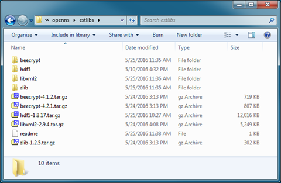
1.2. Build zlib
Open the CMake gui to configure the build, enable the Advanced option, then set both the source and the build folders.
 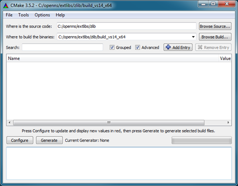
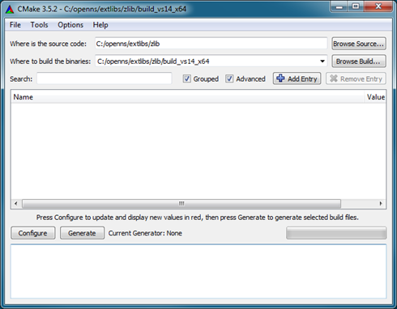
Click the Configure button. You will be prompted to create the output folder, select Yes.
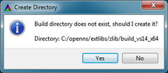
You will then be prompted to select a generator: first choice Visual Studio 14 2015 for 32-bit or Visual Studio 14 2015 Win64 for 64-bit builds, then click on Finish.
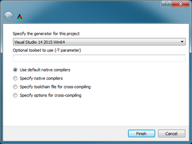
In the CMake gui, modify the following settings:
· BUILD
o BUILD_SHARED_LIBS: YES
· CMAKE
o CMAKE_INSTALL_PREFIX: C:/openns/extlibs/zlib/installed
After that, click the Configure and then Generate buttons. The solution is now available in the build folder.
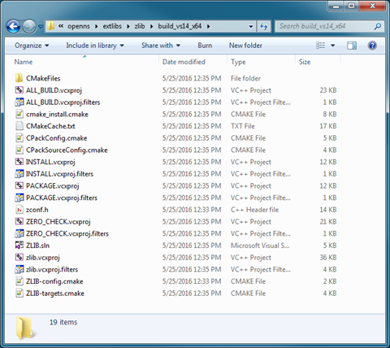
Finally, open the newly generated solution in Visual Studio. Build the Install project both in Release and Debug. If the builds were successful, you will have these folders in the installed folder:
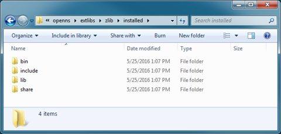
1.3. Build HDF5
Open the CMake gui to configure the build, enable the Advanced option, then set both the source and the build folders.

Click the Configure button. You will be prompted to create the output folder, select Yes.
 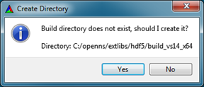
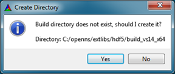
You will then be prompted to select a generator: first choice Visual Studio 14 2015 for 32-bit or Visual Studio 14 2015 Win64 for 64-bit builds, then click on Finish.
In the CMake gui, modify the following settings:
· BUILD
o BUILD_SHARED_LIBS: YES
· CMAKE
o CMAKE_INSTALL_PREFIX: C:/openns/extlibs/hdf5/installed
· HDF5
o HDF5_USE_16_API_DEFAULT: YES
o HDF5_ENABLE_Z_LIB_SUPPORT: YES
Click again Configure and modify the following settings:
· ZLIB
o ZLIB_INCLUDE_DIR: C:/openns/extlibs/zlib/installed/include
o ZLIB_LIBRARY_DEBUG: C:/openns/extlibs/zlib/installed/lib/zlib_D.lib
o ZLIB_LIBRARY_RELEASE: C:/openns/extlibs/zlib/installed/lib/zlib.lib
After that, click the Configure and then Generate buttons. The solution is now available in the build folder.
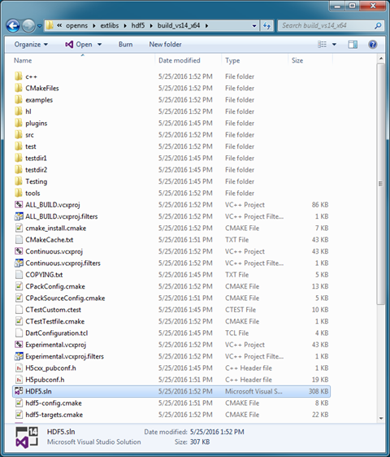
Finally, open the newly generated solution in Visual Studio. Build the Install project both in Release and Debug. If the builds were successful, you will have these folders in the installed folder:
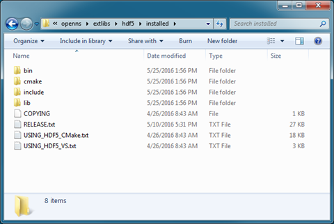
1.4. Build libxml2
Launch the VS2015 x64 Native Tools Command Prompt (for 64-bit) or VS2015 x86 Native Tools Command Prompt (for 32-bit).
Browse to the libxml2/win32 folder, and run the following commands for the release build:
· cscript configure.js compiler=msvc debug=no vcmanifest=yes iconv=no sodir=C:\openns\extlibs\libxml2\bin\release libdir=C:\openns\extlibs\libxml2\lib\release
· nmake /f Makefile.msvc clean
· nmake /f Makefile.msvc
· nmake /f Makefile.msvc install
Browse to the libxml2/win32 folder, and run the following commands for the release build:
· cscript configure.js compiler=msvc debug=yes vcmanifest=yes cruntime=/MDd iconv=no sodir=C:\openns\extlibs\libxml2\bin\debug libdir=C:\openns\extlibs\libxml2\lib\debug
· nmake /f Makefile.msvc clean
· nmake /f Makefile.msvc
· nmake /f Makefile.msvc install
If the builds were successful, you will have bin and lib folders in the libxml2 folder:
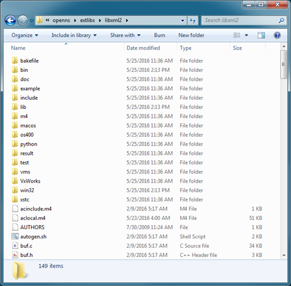
1.5. Build beecrypt
Launch the VS2015 x64 Native Tools Command Prompt (for 64-bit) or VS2015 x86 Native Tools Command Prompt (for 32-bit).
Browse to the beecrypt folder, and run the following commands for the release and debug builds:
· nmake -f Makefile_bag X64=TRUE DEBUG=FALSE
· nmake -f Makefile_bag clean
· nmake -f Makefile_bag X64=TRUE DEBUG=TRUE
If the builds were successful, you will have the binaries in the beecrypt folder:
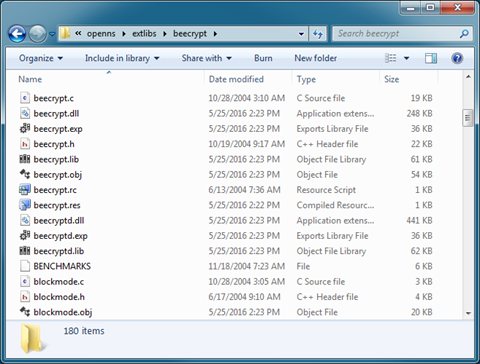
2. Build the BAG library
Open the CMake gui to configure the build, enable the Advanced option, then set both the source and the build folders.
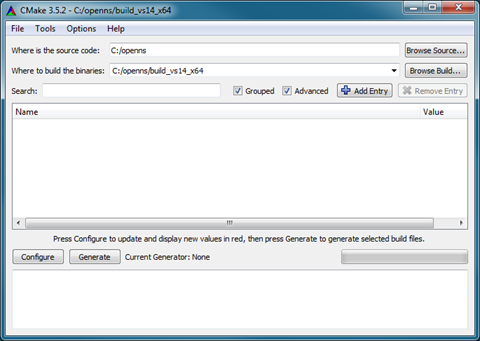
Click the Configure button. You will be prompted to create the output folder, select Yes.
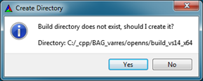
You will then be prompted to select a generator: first choice Visual Studio 14 2015 for 32-bit or Visual Studio 14 2015 Win64 for 64-bit builds, then click on Finish.
After that, click the Configure and then Generate buttons. The solution is now available in the build folder.
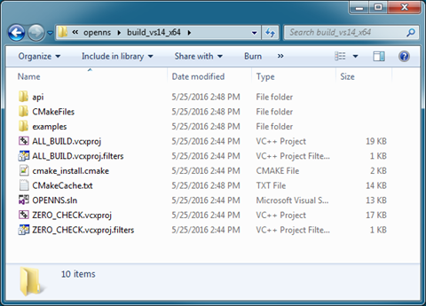
Finally, open the newly generated solution in Visual Studio. Build the solution both in Release and Debug. If the builds were successful, you will have the binaries in the bin and lib folder:
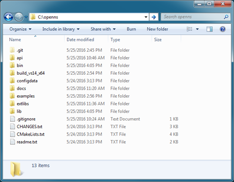